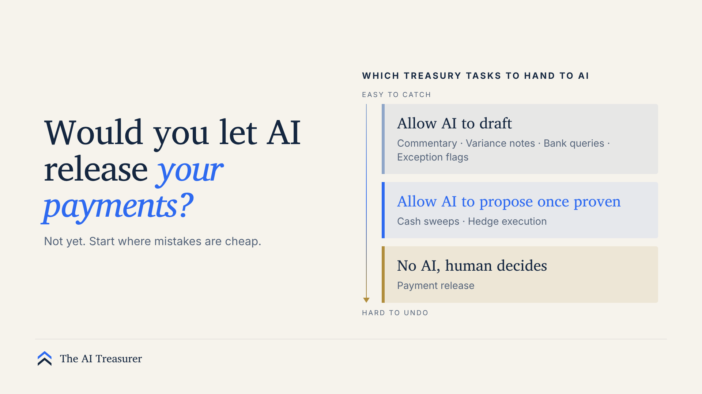

Start Where Mistakes Are Cheap: Choosing the First AI Tasks in Treasury
Before asking what an AI agent can do, ask what a wrong answer would cost and who would catch it.

Every Treasury team is being asked to show progress on AI. The usual starting point is a list of what the technology can do. A better question: what happens when it gets something wrong?
Two mistakes can look alike on day one. An agent writes a cash commentary with a wrong number; the person reading it spots it, and it costs ten minutes. An agent releases a payment to the wrong beneficiary; nobody notices until the supplier calls, and the money may not come back. The order in which you adopt AI should follow that difference.
Four questions to ask before handing a task to AI
- What does a wrong answer cost, and can it be reversed?
- Who would notice, and how soon?
- Can a person check the output against a source in a few minutes?
- Would something simpler do? A rule, a better report or a cleaner process is often cheaper and easier to audit.
If a mistake is cheap, visible and easy to check, it is a good place to learn.
Which Treasury tasks to hand to AI
Sorted by those questions, most Treasury tasks fall into three groups.
1Allow AI to draft
Cash position commentary, forecast versus actual notes, drafting queries to banks, and flagging unusual items for review. In each of these, a person reads the output before anything moves, and the source data is close at hand. If it’s wrong, you lose a few minutes.
2Allow AI to propose once proven
Cash sweeps and hedge execution can come later, once proposals have a track record. The AI proposes, a person approves each action, and every approval is recorded. Limits sit in the banking and payment systems, not in the AI’s instructions, so an AI error cannot exceed them.
3No AI, human decides
Payment release, and anything else that is irreversible or time critical, stays with a person for now. Before automation comes anywhere near it, agree limits, approvals and an escalation path, and test that it can be switched off by someone who knows how.
The teams that get this right won’t be the fastest. They’ll be the ones who can tell their auditor exactly what the AI is allowed to do.
Deciding when to give it more
Write down the evidence before the pilot starts, not after. Useful measures are how often reviewers change the output, how many errors are found late, and how long exceptions stay open. Set the level each must reach to justify more authority. If the numbers fall short, do not expand, and be willing to step back.
A useful exercise this week. List every task where AI is used or proposed in your Treasury. Next to each, write what a wrong answer would cost and who would catch it. The list will tell you where to start.
This article is general discussion, not professional or investment advice. Views are the author’s own and do not represent any employer.